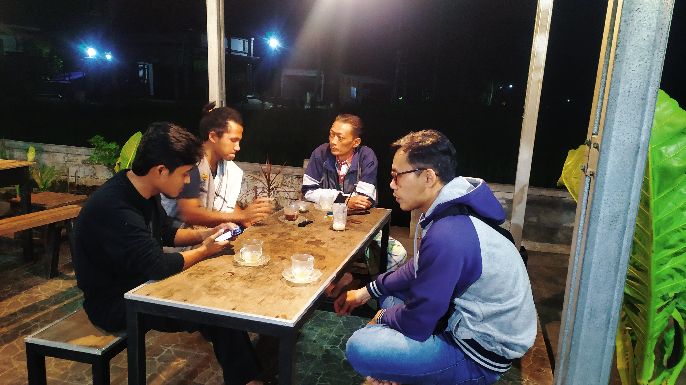

Aku adalah Anugra Salaza
orang-orang memanggilku Ega/Anug
saya pernah mengemban pendidikan di :
Sekarang saya hidup di Lumajang, Jawa Timur
Kesibukan saya sehari-hari selain berkuliah adalah mengikuti
kegiatan di sebuah yayasan bernama Djoeblangan Indonesia

sebuah yayasan yang bergerak dalam sosial keagamaan
| Ambisi | Kenyataan | Usaha |
|---|---|---|
| 1. Mengenali warga di Lumajang serta memulai terhubung dengan jaringan yang ada |
1. Perkuliahan sedang dalam keadaan online 2. Tidak bisa terlalu sering mengikuti kegiatan karena disibukkan oleh perkuliahan. |
1. Mengikuti kegiatan-kegiatan yang ada dalam yang ada di Kabupaten Lumajang 2. Tugas diselesaikan dalam waktu yang cepat sehingga waktu luang lebih banyak. |
| 2. Menjadi Videografer serta Cinematografer handal | 1. Belum memiliki keahlian sama sekali perihal cinematografi dan videografi 2. Memiliki kawan yang mahir dalam videografi karena dulunya sekolah di SMK Multimedia. |
1. Mempelajari dengan mengikuti kawan yang berkecimpung di dunia videografi 2. Belajar melalui youtube serta mengimplementasikan hasil pengamatan di youtube dengan berdiskusi akan cara take dan sebagainya dengan kawan yang sudah mahir. |